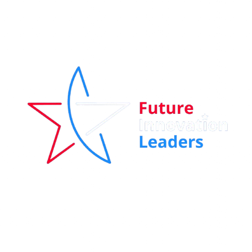
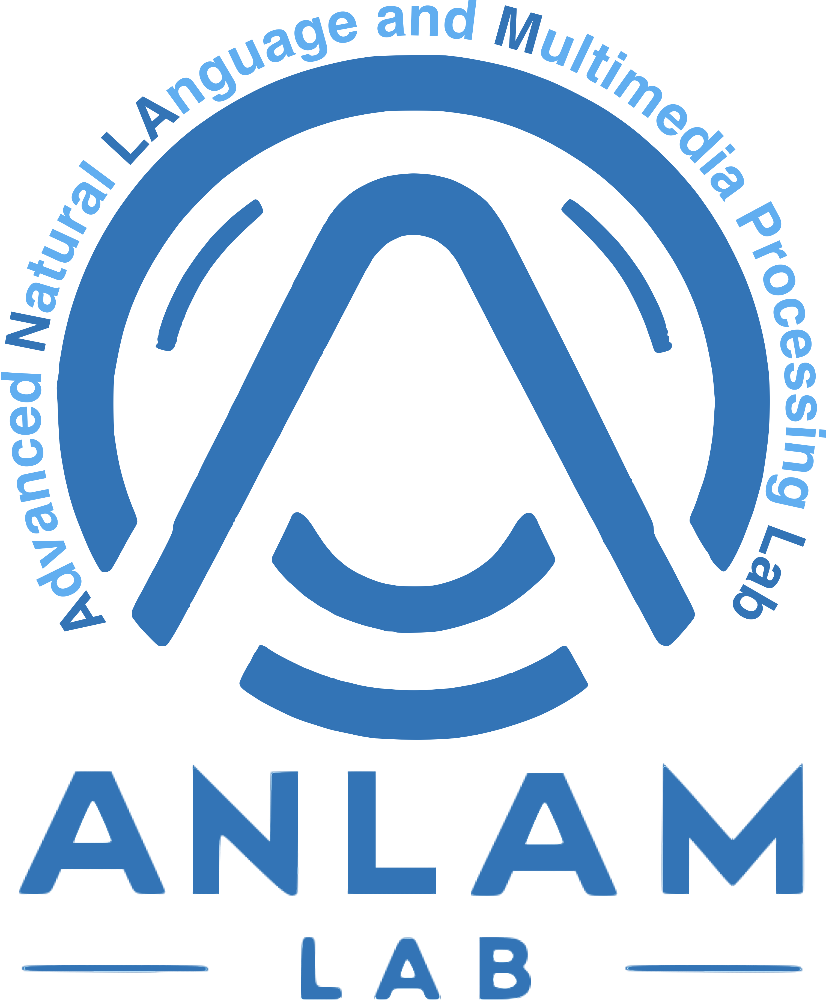
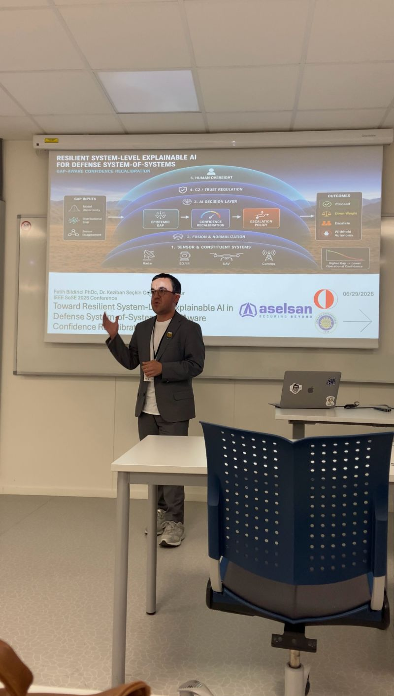
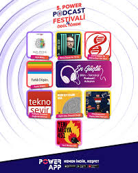

Araştırma
Açıklanabilir ve güvenilir yapay zeka sistemleri üzerine akademik çalışmalar ve disiplinlerarası iş birlikleri.
- Açıklanabilir YZ
- Pekiştirmeli Öğrenme
- İnsan–YZ Etkileşimi
Araştırmacı · Teknoloji Üreticisi · Anlatıcı
Yapay zeka, açıklanabilirlik ve insan–teknoloji etkileşimi üzerine çalışan bir araştırmacı ve teknoloji üreticisiyim.
Araştırma · Teknoloji · Konuşmalar · Podcast

Seçili kurumlar, topluluklar ve akademik bağlantılar





01 / Çalışmalar
Araştırmalar, yayınlar, konuşmalar ve geliştirdiğim projelerden bazıları.

İncele ↗Güvenli ve dayanıklı sistemler için açıklanabilir yapay zeka.
 İncele ↗
İncele ↗Büyük dil modelleri için pedagojik temelli bir açıklama çerçevesi.
 İncele ↗
İncele ↗Yapay zeka ile değişen mühendislik pratiği ve yetkinlikler.

Dinle ↗Yapay zekanın karmaşık dünyasını teknik doğruluktan ödün vermeden anlaşılır hale getiren podcast ve bülten.
Yaklaşım
Akademik araştırma, savunma sanayii, yapay zeka sistemleri, açıklanabilirlik ve bilim iletişimini aynı çalışma alanında bir araya getiriyorum.
Karmaşık sistemlerle insanlar arasında daha açık, güvenilir ve uygulanabilir bağlar kurmaya odaklanıyorum.
Hakkımda02 / Araştırma
İnsanların yapay zeka sistemlerini anlaması, değerlendirmesi ve onlara güvenebilmesi için çalışıyorum.
Karmaşık modellerin kararlarını insanlar için okunabilir, sınanabilir ve eyleme dönük açıklamalara dönüştürme yöntemleri.
Araştırmaları gör03 / Üretim
Araştırmayı teknoloji pratiği ve anlaşılır anlatılarla buluşturuyorum.
Açıklanabilir ve güvenilir yapay zeka sistemleri üzerine akademik çalışmalar ve disiplinlerarası iş birlikleri.
Teknik ve karmaşık yapay zeka konularını farklı kitleler için anlaşılır hale getiren keynote, seminer ve uygulamalı eğitimler.
Otostopçunun Yapay Zeka Rehberi üzerinden yapay zekayı teknik doğruluk, merak ve gündelik hayatın sorularıyla anlatıyorum.
04 / Konuşmalar
Teknik içeriği anlaşılır anlatılarla buluşturan seçili konuşmalar ve eğitimler.

Konferanslar, üniversiteler ve kurumlarda; yapay zeka, teknoloji ve insan arasındaki değişen ilişki üzerine konuşmalar.
Tüm konuşmaları gör
Teknik topluluklarda, yeni teknolojileri eleştirel ve uygulanabilir çerçevelerle ele alan eğitimler ve buluşmalar.
Konuşma daveti05 / Podcast
Douglas Adams'ın eserinden ilhamla, yapay zekanın karmaşık dünyasını anlaşılır kılıyoruz. Makine öğrenmesinden etik tartışmalara, nöral ağlardan gerçek uygulamalara.
06 / Yayınlar
Açıklanabilir yapay zeka, yazılım mühendisliği ve sorumlu sistemler üzerine akademik üretim.
Information and Software Technology · Dergi Makalesi
IISEC · IEEE Konferans Bildirisi
HCI-E · Konferans Bildirisi
07 / Yazılar
Araştırmalar, güncel gelişmeler, kitaplar ve teknoloji üzerine düşünceler.